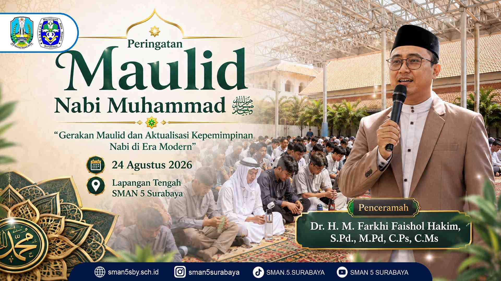
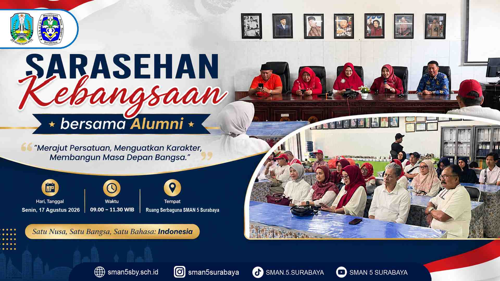
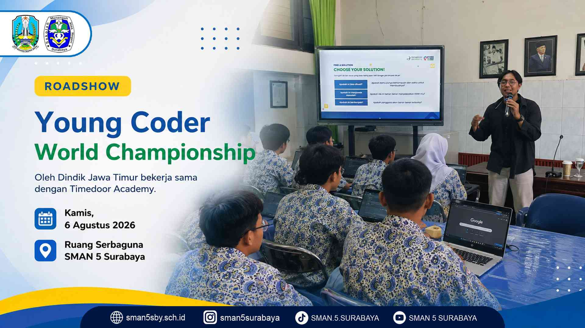
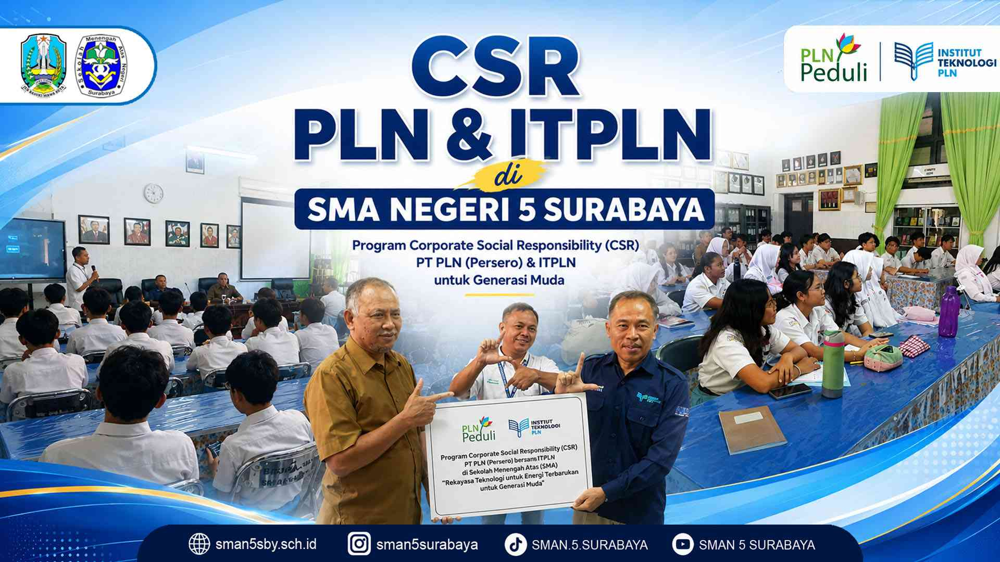
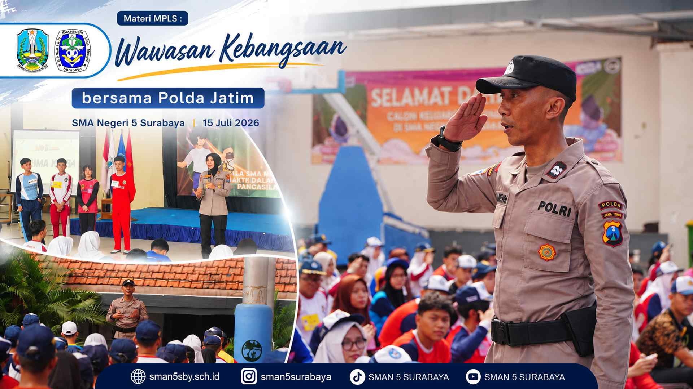

Berita Sekolah
Informasi dan kegiatan SMA Negeri 5 Surabaya.

Peringatan Maulid Nabi Muhammad SAW
Dalam rangka memperingati kelahiran Baginda Rasulullah Muhammad SAW, SMA Negeri 5 Surabaya dengan bangga menyelenggarakan acara peringatan Maulid Nabi.

Sarasehan Kebangsaan bersama Alumni
SMA Negeri 5 Surabaya (SMALA) bersama Ikatan Alumni SMA Panca (IKASMANCA) berkomitmen untuk terus membangun ekosistem pendidikan yang kuat dan berkelanjutan.

Roadshow Young Coder World Championship
Dalam upaya meningkatkan kompetensi digital generasi muda, SMA Negeri 5 Surabaya menyelenggarakan workshop. Kegiatan tersebut bertajuk Roadshow Young Coder World Championship.

CSR PLN dan ITPLN di SMA Negeri 5 Surabaya
Di SMA Negeri 5 Surabaya, kami percaya bahwa setiap langkah belajar hari ini adalah cahaya yang akan menerangi jalan menuju masa depan yang gemilang.

Wawasan Kebangsaan bersama Polda Jatim
Pelaksanaan Masa Pengenalan Lingkungan Sekolah (MPLS) di SMA Negeri 5 Surabaya pada Kamis, 15 Juli 2026, dirancang khusus untuk membentuk karakter siswa baru yang berintegritas.